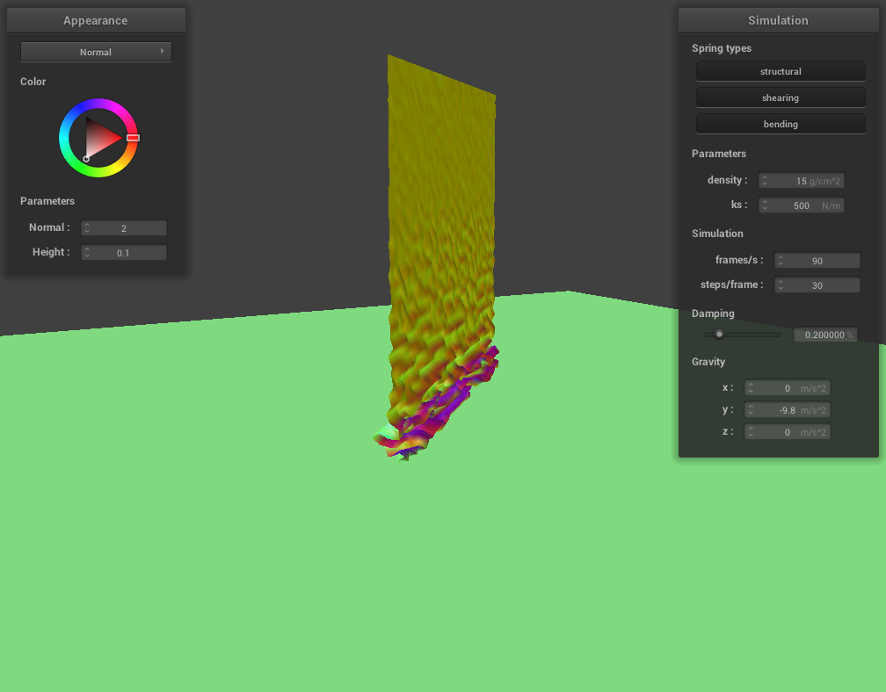

CS 184: Computer Graphics and Imaging, Spring 2023
Project 4: Cloth Simulator
Anders Museth, CS184
Overview
In this project, I implemented a cloth simulator that uses springs to simulate the dynamic motion of cloth. Additionally I wrote several shaders for realistic rendering of the cloth. First, I created a spring grid with point masses and added logic to allow external forces and spring forces to affect the point masses. I then developed code for detecting collisions with other objects as well as self-collisions with the cloth against itself. Finally, I wrote various shaders such as Blinn-Phong, textures, and bump and displacement mapping. Finally, I created a custom shader that uses the Cook-Torrance Reflectance Model. This project was incredibly satisfying, and putting all the pieces together allowed for some truly awesome renders. It also gave me a stronger understanding of how a simple spring model can be used for physics-based animation of complex objects like cloth.
Part I: Masses and springs
pinned2.json
 pinned2.json with all constraints (same as the image above)
pinned2.json with all constraints (same as the image above)
 pinned2.json with no shearing
pinned2.json with no shearing
 pinned2.json with only shearing
pinned2.json with only shearing
Part 2: Simulation via numerical integration
 pinned2.json ks 500 N/m
pinned2.json ks 500 N/m
 pinned2.json ks 5,000 N/m
pinned2.json ks 5,000 N/m
 pinned2.json ks 100,000 N/m
pinned2.json ks 100,000 N/m
When the spring constant (ks) is high, the springs are stiffer and consequently a greater force is required to stretch or compress the cloth. This effect is visible in the image above, where a spring constant of 100,000 results in a tightly stretched cloth that barely sags. In contrast, when the spring constant is low, the springs stretch easily and the cloth sags and stretches more, as seen in the image with a ks of 500.
 pinned2.json density 1 g/cm^2
pinned2.json density 1 g/cm^2
pinned2.json density 15 g/cm^2
 pinned2.json density 30 g/cm^2
pinned2.json density 30 g/cm^2
 pinned2.json density 500 g/cm^2 and ks 100,000 N/m
pinned2.json density 500 g/cm^2 and ks 100,000 N/m
The density of the cloth affects local mass and hence the amount of force caused by gravity, through F_gravity = mass * g, as well as the clothes dynamics through the equation F_gravity + F_spring = mass * acceleration. Consequently, when the density is very low, it has a similar rest shape as when the spring constant is high, as observed when the density is 1 g/cm2. However, the dynamic behavior is different since cloth with high density has more inertia, i.e. bouncing motion. Conversely, when the density is high, the gravitational force on the cloth becomes much greater. This effect is visible in the images above, specifically in the case where the density is 500 g/cm2 and the spring constant is 100,000 N/m. In this scenario, the cloth sags, even though the spring constant is very high.
 pinned2.json Damping 0%
pinned2.json Damping 0%
pinned2.json Damping 100%
Damping plays a critical role in determining the amount of energy that is removed from the velocity at each time step. When the damping is set to 0%, the cloth oscillates back and forth, which does not occur when the damping is higher. Conversely, when the damping is set to 100%, the velocity no longer contributes to the cloth's motion, and only the acceleration has a significant impact. This phenomenon can be seen in the Verlet integration equation for calculating the position of the cloth at the next time step:
x_(t+dt) = x_t + (1 - d) * (x_t - x_(t-dt)) + a * dt^2
Here, d represents the damping term. When the damping is set to 1.00 or 100%, the second term in the right-hand equation, which represents the velocity, becomes 0. As a result, only the acceleration, a, affects the next position of the cloth. This leads to an extremely slow motion of the cloth, with no oscillation.
 pinned4.json default parameters
pinned4.json default parameters
 pinned4.json default parameters from another angle
pinned4.json default parameters from another angle
Part 3: Handling collisions with other objects
sphere.json ks 500 N/m
sphere.json ks 5,000 N/m
sphere.json ks 50,000 N/m
As demonstrated in the images, when the spring constant is lower, the cloth stretches more and droops lower around the ball. Conversely, when the spring constant is very high (as shown in the last image), the cloth hardly stretches and appears more stiff.
plane.json wireframe
plane.json with normal shading
Part 4: Handling self-collisions
selfCollision.json initially
selfCollision.json begining to fall
selfCollision.json finished falling
selfCollision.json at rest
selfCollision.json with density 1 g /cm^2 mid fall
selfCollision.json with density 1 g /cm^2 rest
selfCollision.json with density 500 g /cm^2 mid fall
 selfCollision.json with density 500 g /cm^2 rest
selfCollision.json with density 500 g /cm^2 rest
As observed from the images above, when the density of the cloth is low, the number of wrinkles and folds is also low, and the folds tend to be larger. This is because creating wrinkles and folds in the cloth requires a certain amount of force to overcome the spring forces in the fabric. However, when the density is too low, the cloth does not have enough mass to generate the required force until more cloth is stacked up. On the other hand, when the density is high, even a small amount of cloth can easily create the force necessary to bend the cloth and create wrinkles, resulting in numerous small folds, as depicted in the images above.

selfCollision.json with ks 500 N / m mid fall
selfCollision.json with ks 500 N / m rest
selfCollision.json with ks 50000 N / m mid fall
selfCollision.json with ks 50000 N / m rest
The behavior observed in the cloth is similar to changing the spring constant, only in reverse. Increasing the spring constant causes the amount of force required to create wrinkles and folds to increase, resulting in fewer and larger folds as the cloth falls, as depicted in the images above. Conversely, decreasing the spring constant has a similar effect to increasing the density of the cloth. This is because less force is needed to fold and bend the cloth, resulting in numerous small folds and wrinkles.
Part 5: Shaders
Shaders are programs that run on the GPU to perform graphical calculations used in rendering. This can significantly speed up the rendering process since it runs in parallel on the GPU and utilizes the GPU's hundreds of threads, greatly speeding up the SIMD (Single Instruction Multiple Data) data processing needed for rendering. Specifically, vertex and fragment shaders can be used to create lighting and material effects. The vertex shader processes data for each vertex in the model (such as vertex normals and positions), and then passes that information to the fragment shader. The fragment shader then processes the data for each pixel and calculates the color and opacity at each pixel.
Bling-Phong shader
Ambient part of Bling-Phong shading
Diffuse part of Bling-Phong shading
Specular part of Bling-Phong shading
All parts combined of Bling-Phong shading
Blinn-Phong shading consists of three main components. The first component, ambient light, functions as a constant light source and which is utilized to model indirect lighting. The second component of Blinn-Phong shading is the diffuse component, which represents light that bounces onto the object and scatters uniformly in all directions, resulting in matte-like appearance on the surface. The third component is the specular component, responsible for modeling the shininess that arises from the surface's smoothness. It captures the bright highlights that contribute to a glossy finish on various objects. The specular effect is accomplished by computing the half-angle, which subsequently enhances the light's intensity as it approaches the normal vector which causes the glossy finish.
Texture shader
Texture shader at time zero
Texture shader at rest
Displacement and Bump Mapping
Bump map shader with texture 3
Bump map shader with texture 3 at rest
Displacement map shader with texture 3
Displacement map shader with texture 3 at rest
Bump map shaders generate the illusion of a rougher or bumpy surface by utilizing a height map to modify the normals on the surface. However, bump map shaders do not alter the mesh's vertices, thus retaining the original shape while giving the appearance of a more intricate surface. In contrast, displacement map shaders perform a similar function to bump mapping but also modify the actual surface by displacing the vertices in the direction of the new normals, resulting in a truly altered geometry. As observed in the displacement mapping images, the sphere exhibits a more jagged appearance and deviates from its original round shape, while the bump map maintains an almost perfect spherical form. Another effect of displacement mapping, however, is that the cloth on the ball appears to be stiffer due to the changes in vertices, which cause the cloth to lose some of its flexibility.
Bump map shader with texture 3 at sphere resolution of 16
Bump map shader with texture 3 at sphere resolution of 128
Displacement map shader with texture 3 at sphere resolution of 16
Displacement map shader with texture 3 at sphere resolution of 128
Bump mapping doesn't change when changing the sphere's resolution since the vertices aren't actually being changed. However, changing the resolution of the sphere greatly affects displacement mapping. This is because when using a higher resolution sphere, there are more vertices to move, resulting in a more bumpy and jagged surface. In contrast, when using a lower resolution sphere, the surface is still deformed, but it doesn't create as many crevices and deformities.
Environment-mapped Reflections
Mirror shader
Mirror shader at rest
Custom/Cook-Torrance
Custom/Cook-Torrance shader at alpha 0.005
Custom/Cook-Torrance shader at alpha 0.25
Custom/Cook-Torrance shader at alpha 0.5
My shader is based on the Cook-Torrance Reflectance Model, which attempts to emulate Microfacet materials. This is achieved by calculating a Normal Distribution Function, which in this case is the Beckmann distribution, a Fresnel term, and a Geometric Attenuation term.
Normal Distribution Function:
The equations for the Fresnel term:
"n" represents the index of refraction for the material. In this particular case, the values used are:
r = 0.059193, g = 0.059881, and b = 0.047366
Geometric Attenuation function:
By using this shader and adjusting the alpha value, it is possible to generate extremely smooth, almost latex-like cloth or, when the surface is made rougher, create a similar effect to Blinn-Phong shading.